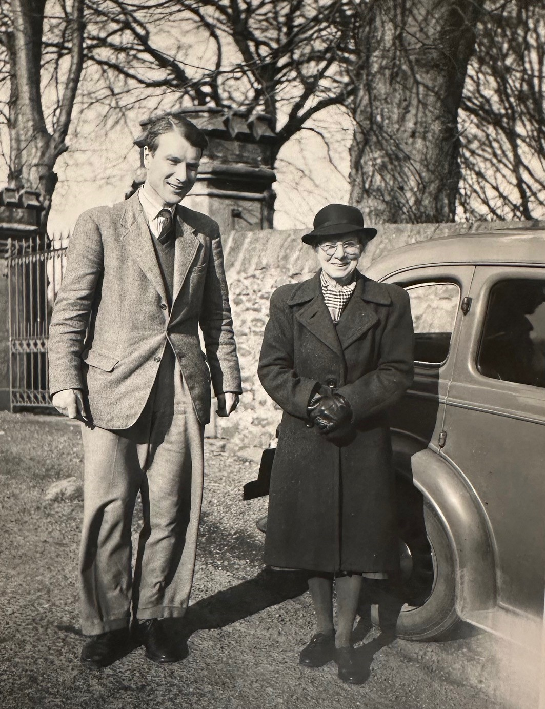
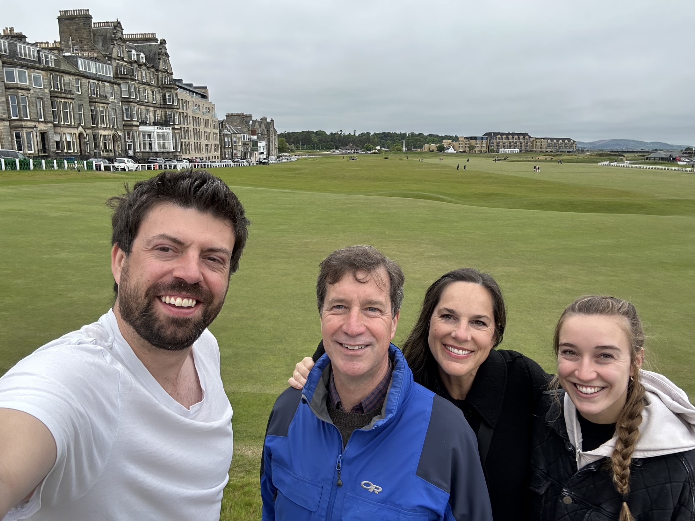

I received a surprising and interesting email in Spring 2023 from a 'Rich Read' in which he explained that he was the son of the late
Arthur Hinton Read; a former Lecturer in Pure Mathematics at St Andrews who died tragically in a mountaineering accident in 1961.
Rich—a reporter of some renown, based in Seattle
—was planning a trip to Scotland, back to St Andrews where he had been only 4 years old at the time of his father's death and his family's subsequent move to the USA. To this day, the School still awards the
Arthur Hinton Read Memorial Prize to the top student in Pure Mathematics in Senior Honours, and Rich wanted to connect with the School, partly to thank it for honouring his father for so long. Rich identified me as a possible contact when he found my CV on the web still bearing the
Arthur Hinton Read Memorial Prize from my Undergraduate days in 2009 (a fact that some have ridiculed me for!) Intrigued by his story, I agreed to meet Rich and his family (wife Brenda, daughter Nehalem) for coffee and an impromptu tour of the town. This tour ended in the common room of the Mathematical Institute where were we connected with
Edmund Robertson (Emeritus Professor of Pure Mathematics, renowned historian of mathematics, and also one of my Undergraduate lecturers!) who recounted tales of actually having been taught Linear Algebra by Arthur Hinton Read in 1961 and of the class receiving news of the tragedy from
Edward Copson (former Professor of Mathematics in St Andrews who had a great influence in the develpment of the department in the 50s and 60s). It was a very moving encounter, which I was glad to have witnessed.
Here is a video which gives some history about mathematics (and others things) in St Andrews in the 1950s and 60s:
video .
|

|

|
| Arthur Hinton Read with his mother Ida in St Andrews.
|
Me, pictured here with Rich Read, Rich's wife Brenda, and daughter Nehalem in 2023.
|
Home